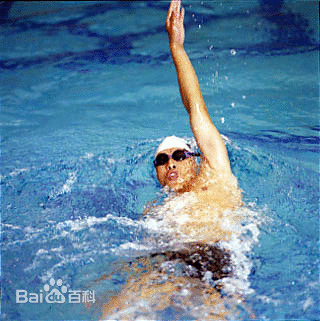

仰泳，又名背泳，是一种人体仰卧在水中的游泳姿势。仰泳包括反蛙泳和反爬泳，因为脸面在水面上，呼吸很方便，但是游泳者看不到在往哪里游，容易错方向。仰泳是唯一运动员在水中开始的姿势，其它都是跳入水中。
积极的流线型
所谓"积极的"流线型，是指在任何时候都要使自己的身体姿势保持流线型，而不仅仅在移动速度最快的出发和转身后。不论你的身高如何，都要使自己游起来显得很高。将身体尽量伸展，把自己想象成一个只移动数寸的圆滑的、滑动的贝壳，而不是在水中前进的小舟或驳船。
平稳身体姿势
尽量使身体与水平面平行。通过微向前耸肩使脊背保持挺直。髋部下沉会带来较大的阻力，而且使腿的负荷加大，在比赛前半段就会耗费较多能量。克雷泽伯格的髋部很高，因为在他快速游进时身体漂在水面较高的位置，身体保持平衡。反过来，游得越快，身体位置也会越高。
身体的转动
像滚动的原木那样使身体向两侧转动。要注意把肩和髋关节看作一个整体来转动。像在滑冰或轮滑时那样将身体的重量从一侧向另一侧转换。转动速度要快，使自己在多数时间都处于侧位，而不是平平的仰卧位。这样既可以减小阻力，又能够充分发挥躯干大肌肉群的力量。
移臂和入水
通过猛然向侧方转动使手快速离开水面。事实上，肩应该比手早离开水面。如果手先出水，肩会遇到很大的阻力。移臂应放松，且垂直于身体来保持身体的平衡。如果移臂过宽，往往导致过早转体，使手在头前入水。其结果是使节奏减慢，并影响身体的转动。正确的入水点应在肩延线上。
打腿
踝关节的灵活性对仰泳腿十分重要。两腿要窄，足尖伸展，脚位于身体截面内。水花不宜过大，但要通过打腿始终使脚周围的水像圆屋顶那样。利用打腿引起身体的转动。记住侧卧时的速度比仰卧要快，爬式仰泳的配合动作与自由泳相同。基本技术包括身体姿势、腿和臂的动作，以及呼吸与动作配合等方面。
身体姿势：仰泳时身体几乎水平仰卧在水中，胸部自然伸展与腹部成一直线，头部没于水中，脸部露出水面。在游进时，头部始终保持正直姿势，躯干围绕纵轴因两臂的轮流划水动作而自然转动。
腿的技术：仰泳时腿的动作作用有三：一是推动身体前进，二是维持身体平衡，三是保持身体有较高水平姿势。腿打水的幅度比自由泳稍大。打水时，以髋关节为支点，大腿发力，带动小腿及脚用力上踢。向上踢水时膝关节微屈，约成140°角左右，踝关节伸展，脚向内转，动作要有力。向下打水时，膝关节自然伸直，两脚跟的上下最大距离约40～50厘米。踢水时脚尖稍向内旋，以加大踢水面积。
臂的技术：臂的技术分入水、抱水、划水、出水和空中移臂几个部分，几个动作连贯地进行。入水时臂自然伸直，手小指朝下在肩延长线的前方，臂切身入水。抱水，当手切入水中后，向外侧下滑，然后手掌向上向后方勾手，同时肩内旋，肘关节向前下方引，手继续上提，拉开肩带肌群，使手和小臂对好划水方向。划水是动作的主要部分。从臂抱水与身体纵轴成40～50°角开始屈臂划水，手后划的速度要快于肘。划水至肩侧时，手距水面约15厘米。这时手、前臂、上臂同时向后方做推水动作。肘关节将靠近体侧时，手向后下方压水，肩关节向上转动，内旋，手掌内转下压至大腿旁时结束划水。划水结束后，借助手掌下压的反作用力，以提肩带动上臂和前臂出水，手放松，臂出水后沿肩线上方前移，臂伸直。两臂的配合是一臂入水时，另一臂出水。
呼吸与动作配合：由于脸露出水面，呼吸比较自然，一般是右臂出水时吸气，移臂至将垂直水面时吸气结束，然后憋气，手入水后均匀吐气，手将出水时吐气结束。臂腿配合动作一般是两臂各划水1次，腿打水6次。
仰泳膝盖不能弯
很多游泳爱好者说，仰泳看起来很漂亮，游起来却感觉不那么舒服，也就是在一些技术问题上不得要领。
很多人仰泳时身体老是浮不起来，问题最有可能出在腿部动作上。仰泳时双腿一定要绷直，膝关节、踝关节均伸直，双脚稍内扣。打腿时须大腿用力，直腿下压。两腿交替不能有停顿。初学者可以先在陆上做一些腿部模仿练习，来体会动作要领。
另外，仰泳不是全身放松地躺着，必须挺胸、收腹、敛臀。千万不能坐在水里，那样就快就会沉下去了。如果动作足够标准，想提高速度的话，仰泳时就要加快打水的频率。一般平均打腿6次、划手1周是标准频率。
行进间两臂要交替划水，两臂之间保持180度最好。在水面上胳膊要伸直，手入水的时候大臂最好碰到自己的耳朵。手入水后，先屈腕，再屈肘，手至肚脐位置时再用力推水。建议初学者先在陆上作模仿动作，先做站立模仿，等动作熟悉后，做仰卧模仿。
有的人抱怨仰泳时鼻子里进水。其实，这个问题很好解决，只要下巴尽量靠近自己的胸就行了。
仰泳呼吸：别让自己总喝水
仰泳的姿势决定了它没有什么换气技术可言，但仰泳却是喝水最多的泳姿，手臂挥动时带出的水往往全都到了嘴里，呛的非常难受。有的人为此把头部微微前倾出一定的角度，可以减少喝水，但同时带来的问题就是速度慢下来了，所以其中的取舍就因个人而异了。
仰泳最注重的身体的平衡，不同于其他三种泳姿，仰泳是没有参照物作为前进的方向的所以两臂的用力均匀以及自己的感觉显得特别的重要。
仰泳腿部动作常见错误及纠正方法[1]
1、打腿时膝部露出水面
直接原因：a：屈髋。
b：大腿下压不够。
纠正方法：a：髋关节充分展开，大腿积极下压，上踢时膝部及时制动。
b：通过直腿打水体会动作要领。
2、腿下沉，踢不出水花。
直接原因：a：怕呛水，头部位置太高。
b：打腿幅度太大，大腿下压太深。
纠正方法：a：学会正确的呼吸方法，强调稍仰头，微挺胸，形成平直仰卧姿势。
b：小幅度快频率打腿。直腿下压放松，屈腿上踢用力。
3、小腿踢水。
直接原因：a：大腿过于紧张，只靠膝关节屈伸来打水。
纠正方法：a：强调由大腿带动小腿鞭状打水，尤其注意大腿积极下压的动作。
b：通过直腿打水体会动作要领。
打水频率
我们知道爬泳的打水频率有2、4、6次，那么海豚式仰泳也应与之相似，但最常见的是2次，即 每划水一次打水一次。像蝶泳一样，一开始有较2 次更高的打水频率，但事实证明每划水一次打水2 次最有效。运动员在出发和转身时可以采用较高的 打水频率，但进入划水阶段时要采用2次打水频率 的节奏。
打水时机
最有效的打水时机是在手进入抱水阶段。划水 的节奏决定打水的时机，在划水阶段的低推进部分 时采用打水阶段的高推进部分是符合逻辑的，即在 一只手入水几英寸深时，另一只手己完成高推进部 分的最后推水进入空中移臂阶段，这时正处在划水 阶段的低推进部分，所以此时采用打水可以帮助身 体向前推进。
在身体向前运动时要保持均匀速度，不要有明 显的停顿，就像现代的蛙泳技术动作流畅，而不象 过去那种有明显停顿和不均匀的游进方式一样。
身体转动
海豚式打水的仰泳技术最困难的部分是身体 围绕长轴连续的转动。这种技术要求运动员做较大 角度的转动以获得最大的划水距离和效果。流体力 学告诉我们侧身位的打水比正或反身位的打水速 度快，这是因为侧身位把水推离至两边比正或反身 位把水推离至有波浪的水表面效率更高。(你可以 去水族馆观察一下，大多数鱼类都是向两测摆尾打水)
海豚式打水的仰泳技术也是利用核心力量驱 使身体转动的，与蝶泳不同的是它要求臀部的左右 转动。
打水幅度
如果打水幅度过大，就会产生较大的阻力。正 如出发和转身时采用的水下海豚式打水一样，使打 水幅度控制在身体前进方向上的投影面内。例如， 一个运动员在身体前进方向的投影面积为1，他打 水时腿伸出投影面使之面积增加至2，那么就会产 生多至4倍的阻力。所以正确的打水应是快速、小 幅度并有一定的停顿，而不是那种大幅度，慢速的 打水，它只会降低身体位置和增加阻力。
打水力量
在蝶泳中，打水时是向下重打，向上轻打。在 海豚式打水的仰泳技术中则是在左右两个方向上 都要求重打水。
稳定身体
这种技术最常见的错误是在打水时上半身过 度的左右转动，这样会产生身体的波动，使身体下 沉。从而破坏划水的节奏。正确的是上半身相对固 定，转动从臀部以下开始。
协调能力
协调能力是指把几种运动有机地组合在一起， 使它们成为一体。海豚式打水的仰泳技术需要这种 协调能力把打水时机和节奏、转动及核心力量有机 组成为一体。只有把上述因素协调好才能形成完美 的技术，从而战胜传统的技术。
仰泳身体位置
游仰泳时，身体要自然伸展，仰卧在水面，头和肩部稍高，腰部和腿部保持水平，身体纵轴在水平面上构成的迎角约为10度角，腰部和两腿均处在水面下。
头部姿势 在仰泳技术中头起着“舵”的作用，并可以控制身体左右转动。头应保持相对稳定，不要上下左右晃动，但颈部肌肉不要过分紧张，后脑处在水中，水位在耳际附近，两眼看腿部的上方。
腰部姿势 仰泳游进中，腰部肌肉要保持适度的紧张，以不至于使身体过分平直和屈髋成坐卧姿势为前提。肋上提，不要含胸。快速游进时，身体的迎角能使体位升高，水平较高的运动员不仅肩和胸部露出水面，而且腹部也经常会露出水面。
身体的转动动作 游仰泳时，身体的纵轴应随着两臂划水动作而自然滚动，滚动的角度根据个人的情况不同而稍有差别，肩关节灵活性较好的人滚动小，反之则大，一般为45度角左右。
身体滚动的目的主要是有利于划水臂处于较好的角度，能够加强划水的力量；能保持屈臂划水的一定深度；有利于臂出水和向前移臂。注意滚动的角度不应过大，否则不但会引起疲劳，而且会影响前进速度。
仰泳腿部动作
在仰泳技术中，腿部动作是保持身体处于较好角度、水平姿势的因素之一，并且踢水动作不但可以控制身体的摆动，而且能产生一定的推进力。
仰泳的腿部动作是以下压动作和上踢动作组成，即直腿下压，屈腿上踢。
下压动作 腿向下压的动作是借助于臀部肌群的收缩来完成的。在整个腿下压动作中，前三分之二由于水的阻力，是膝关节充分展开，腿部肌肉放松。当打腿下压到一定程度，由于腹肌和腰肌的控制，停止向下，而过渡到向上移动，由于惯性的作用，小腿仍然继续向下，而造成膝关节弯曲，所以在腿下压的后三分之一是屈腿的。
随着惯性的逐渐减弱和打腿的带动，小腿也开始向上移动，但此时脚仍然继续向下，直到惯性消失，大腿、小腿和脚一次结束向下的动作，构成向下“鞭打”的动作。
下压的动作因为不产生推进力，因此相对的要求速度不要太快，并且腿部各关节要自然放松。
上踢动作 当腿部动作下压结束时，由于水对小腿的阻力和大腿肌肉的牵制，大腿与小腿构成约135-140度角，小腿与水平面约成40-45度角。
此时打小腿弯曲到最大程度，小腿和脚对水面较大。上踢动作的开始，就需要用脚打的力量和速度来进行，并逐渐加大到最大力量和速度。当打腿向上移动超过水平面就结束向上的动作，此时膝关节接近水面。随后小腿和脚也依次结束向上，是膝关节充分伸展，构成向下“鞭打”的动作。
上踢动作是以大腿带动小腿，小腿带动脚来完成的，并且在任何情况下，尽量不要是膝关节或脚尖露出水面。上踢时，脚尖应内旋以加大对水面积。
仰泳臂部动作
仰泳臂划水动作是产生推动身体前进的主要因素。一个完整的手臂动作分为入水、抱水、划推水、出水和空中移臂等几个阶段，手掌由于入水、抱水和划推水在水下形成一个“S”型的路线。
入水 臂入水时，应借助于移臂动作的惯性，臂部自然放松，入水点应在身体纵轴与肩的延长线之间，或在肩的延长线上。过宽和过窄都会影响速度。
臂入水时应保持直臂，肘部不要弯曲，入水时小指向下，拇指向上，掌心向侧后方。手掌与小臂约成150-160度角。
抱水 抱水是为划推水创造有利的条件。臂入水后要利用移臂时所产生的动量积极下滑到一定的深度，手掌向下、向侧移动，通过伸肩、屈肘、上臂内旋和屈腕的动作，配合身体的滚动，使手掌和前臂对准水并有压力的感觉。当完成抱水动作时，肘部微屈约成150-160度角，手掌据水面约30-40厘米，肩保持较高的位置。
抱水时：手的运动方向为向后——向下——向外的三个分运动，水流由小指尖流向第一掌骨底，紧接着通过前臂外旋，改变掌心朝向，由向外——向下——向后变为向后——向上——向外侧的方向。
划推水 仰泳的划水动作是推动身体前进的主要动力。整个动作是由屈臂抱水开始，以肩为中心，划直打腿外侧下方为止。划水动作包含拉水和推水两个阶段。
拉水是在臂前伸抱水的基础上进行的。开始时前臂内旋，手掌上移，肘部下降，使屈肘程度加大，手掌和小必要保持与前进方向垂直。当手掌划之肩侧时，屈臂程度最大，约为70-110度角，手掌接近水面。 拉水的前半部分，手的运动为向上——向外——向后的三个分运动；后半部分则是向上——向内——向后的三个分运动。水流从大拇指流行小指。这个阶段也是身体向划水臂同侧转动最大的阶段。
推水是在手臂划过肩侧时开始的，这时肘关节和大臂应逐渐向身体靠近，同时用力向脚的方向推水。当推水即将结束时，小臂内旋做加速转腕下压的动作，掌心游向后转向向下。推水时，手的运动时游向内——向下——向后的运动，逐渐转变为向内——向下——向前的运动。水流从小指流向大拇指一边。推水结束时，手臂要伸直，手掌在大腿侧下方。
出水 推水结束后，借助于手掌压水的反弹力迅速提臂出水。出水时手形有多种：其一、手背先出水；其二、大拇指先出水；其三、小拇指先出水。这三种手型各有利弊，相对来说最后一种较好。
无论采用那种手型出水，都要注意使手臂自然、放松、迅速，并且要先压水后提肩，肩部露出水面后，由肩带动大臂、小臂和手依次出水。
空中移臂 提臂出水后，手应迅速从大腿外侧垂直于水面移至肩前。当手臂移至肩上方时，手掌要内旋，使掌心向外翻转（采用小拇指先出水技术的无此动作）。空中移臂时，臂要伸直放松，移臂的后阶段要注意肩关节充分伸展，为入水和划水做好准备。
配合技术
两臂配合技术 仰泳两臂的配合是“连接式”的，即当一臂划水结束时，另一臂已入水并开始划水；一臂处于划水的中部，另一臂正处于移臂的一半。在整个臂的动作过程中，两臂几乎都处在完全相反的位置 。
臂和呼吸的配合 仰泳的呼吸相对来说比较简单，一般是两次划水一次呼吸。即一臂移臂时开始吸气，然后做短暂的憋气，当另一臂移臂时进行呼气。在高速游进时也有一次划水一次呼吸的技术，但是呼吸不能过于频繁，否则会引起呼吸不充分，造成动作紊乱。
臂腿配合技术 臂腿配合是否合理，将影响整个动作的平衡和协调自然。臂在划水过程中，腿的上踢、下压动作要避免身体的过分转动，以保持身体的平衡、协调为原则。
臂部动作 腿部动作
右臂 左臂 右腿 左腿
抱水 出水移臂开始 上踢 下压
拉水 移臂中间 下压 上踢
推水 移臂结束入水 上踢 下压
出水移臂开始 抱水 下压 上踢
移臂中间 拉水 上踢 下压
移臂结束入水 推水 下压 上踢